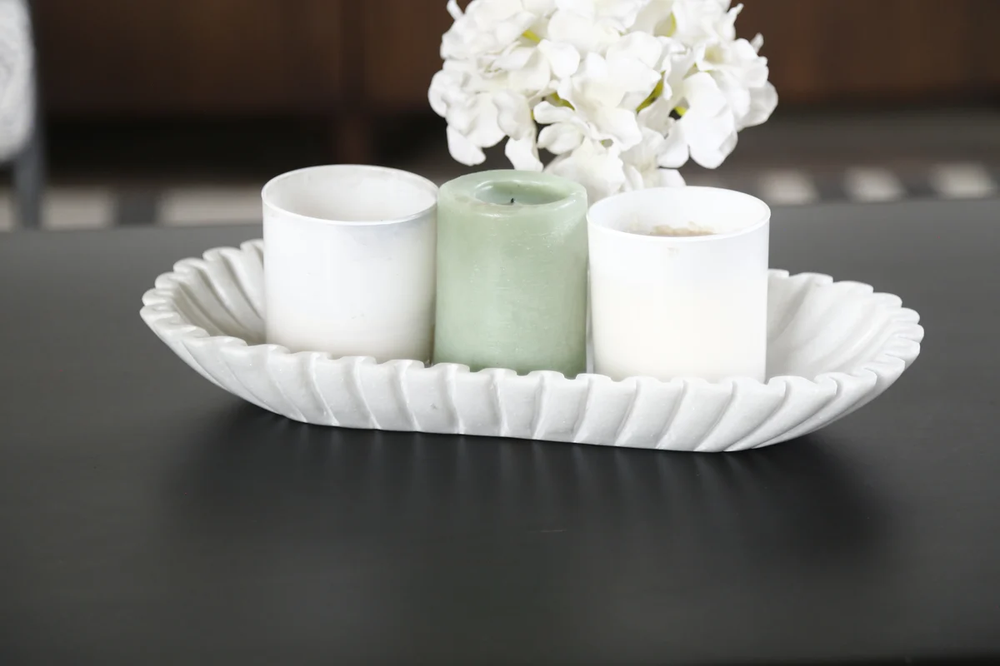
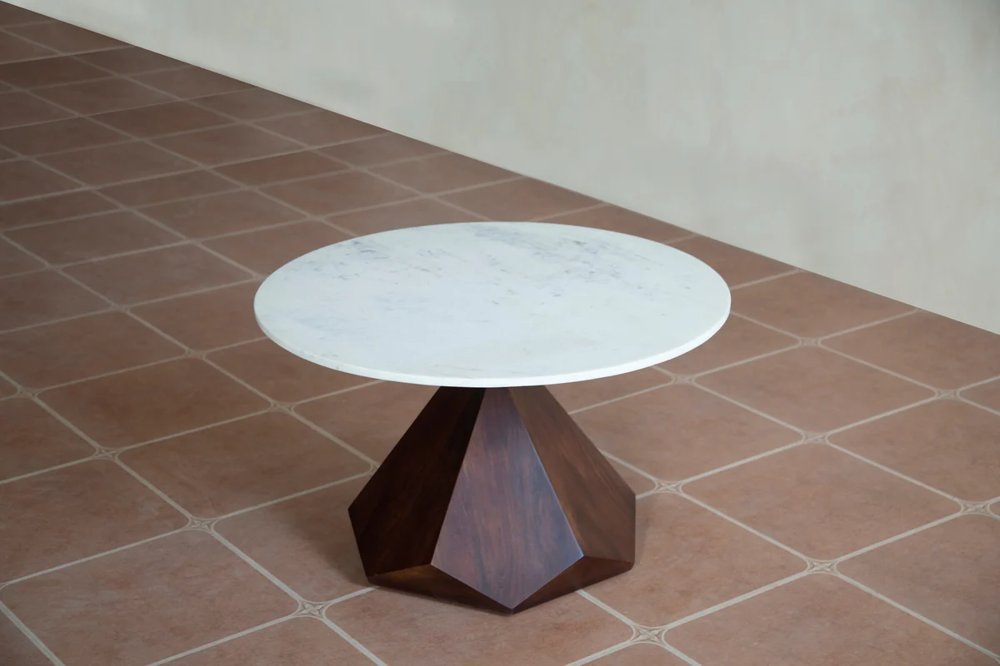

Your coffee table is more than just a functional piece. It's a canvas for expressing your personal style.
With the right styling approach, your coffee table can become the focal point of your living room.
1. The rule of three
Designers swear by grouping items in threes. Try combining a stack of books, a decorative object, and a small plant or candle. This creates visual interest without overwhelming the space.
2. Use a tray for organisation
A beautiful tray anchors your display and makes it easy to clear the table when needed. Choose a tray that contrasts with your table: a metallic tray on a wooden table, or a wooden tray on a glass table.

3. Add height variation
Create dimension by varying the heights of your objects. Stack books to create elevation, use tall candlesticks, or add a small vase with flowers. This prevents your display from looking flat.
4. Incorporate natural elements
Bring life to your coffee table with fresh flowers, succulents, or a bowl of decorative stones. Natural elements add warmth and can be easily changed with the seasons.

5. Display your favourite books
Coffee table books aren't just for reading. They're decorative elements that showcase your interests. Stack two or three large-format books and top with a small object.
6. Keep it functional
Remember, your coffee table needs to be usable. Leave enough clear space for drinks, snacks, or remote controls. A cluttered table looks messy, not styled.
A cluttered table looks messy, not styled.
7. Reflect your personality
The best coffee table styling reflects who you are. Display travel souvenirs, art pieces you love, or collections that tell your story. Authenticity always looks better than following trends.